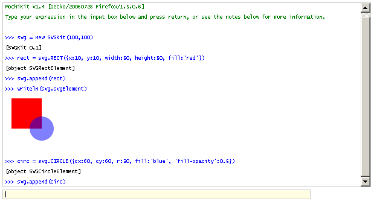

Tutorials
Interpreter
The best way to play is to use the MochiKit interpreter with SVGKit, SVGCanvas, and SVGEvent included: SVGKit Interpreter

Your Own HTML Pages
To include SVGKit in your own page, you must download MochiKit. A minimal HTML example whose source code is below. If you want to use SVGEvents or SVGCanvas, you have to include those too.
<!DOCTYPE HTML PUBLIC "-//W3C//DTD HTML 4.0//EN"
"http://www.w3.org/TR/REC-html40/strict.dtd">
<html xmlns="http://www.w3.org/1999/xhtml">
<head>
<title>SVGKit Minimal</title>
<!-- START Required for IE to support inlined SVG -->
<object id="AdobeSVG" width="1" height="1" classid="clsid:78156a80-c6a1-4bbf-8e6a-3cd390eeb4e2"></object>
<?import namespace="svg" implementation="#AdobeSVG"?>
<!-- END Required for IE to support inlined SVG -->
<script type="text/javascript" src="../MochiKit/MochiKit.js"></script>
<script type="text/javascript" src="../SVGKit/SVGKit.js" ></script>
<script type="text/javascript">
var example = function() {
var svg = new SVGKit(100,100)
var rect = svg.RECT({x:10, y:10, width:50, height:50, fill:'red'})
svg.append(rect)
var circ = svg.CIRCLE({cx:60, cy:60, r:20, fill:'blue', 'fill-opacity':0.5})
svg.append(circ)
appendChildNodes('mydiv', svg.htmlElement)
}
addLoadEvent(example);
</script>
</head>
<body>
<h2>Minimal SVGKit HTML File</h2>
<div id="mydiv">
</div>
</body>
</html>
Getting your web server to serve SVGs with the right mime-type: image/svg+xml
With apache you can add lines like this to your .htaccess file:
AddType image/svg+xml svg
AddType image/svg+xml svgz